전기공사산업기사 (2006-05-14 기출문제)
1과목: 전기응용
1. 15℃의 물 4L를 1kW의 전열기로 가열하여 80℃로 높이는데 30분이 소요되었다. 이 때의 전열기의 효율은 약 몇 %인가?
- 55
- 60
- 65
- 70
(정답률: 72%)

2. 용접방법 중 플라즈마 제트에 대한 설명으로 틀린 것은?
- 에너지 밀도가 커서 안정도가 높고 보유 열량이 크다.
- 용접속도가 빠른다.
- 피포가스를 이중으로 사용할 필요가 있고 토치구조가 복잡하다.
- 균일 용접이 어렵다.
(정답률: 69%)
3. 발광에 양광주를 이용하는 조명등은?
- 텅스텐 아크등
- 네온전구
- 탄소 아크등
- 네온관등
(정답률: 72%)
4. 음극만 빛남으로 직류 극성을 판별하는데 이용되는 것은?
- 형광등
- 수은등
- 네온전구
- 나트륨등
(정답률: 72%)
5. 전차용 전동기에 보극을 실시하는 이유는?
- 진동 방지
- 역회전 방지
- 섬락 방지
- 불꽃 방지
(정답률: 69%)
6. 30톤의 전동차가 30/1000의 경사를 올라가는 데 필요한 견인력은 몇 kgf인가? (단, 열차의 저항은 무시한다.)
- 90
- 100
- 900
- 9,000
(정답률: 75%)
7. SCR의 애노드 전류가 20A로 흐르고 있을 때 게이트전류를 반으로 줄이면 애노드 전류는 몇 A가 되는가?
- 0
- 10
- 20
- 40
(정답률: 87%)
8. 저항 가열은 어떠한 원리를 이용한 것인가?
- 야크손
- 유전체손
- 줄열
- 히스테리시스손
(정답률: 85%)
9. 흑체의 온도복사에 관한 표현 중 틀린 것은?
- 전복사 에너지는 절대온도의 4승에 비례한다.
- 최대 에너지는 절대온도의 2승에 비례한다.
- 최대 복사 에너지의 파장은 절대온도에 반비례한다.
- 흑체의 온도가 높아질수록 최대복사 에너지 파장은 짧아진다.
(정답률: 53%)
10. 반사율 60%, 흡수율 20%를 가지고 있는 물체에 2,000lm의 빛을 비추었을 때 투과되는 광속은 몇 [lm]인가?
- 100
- 200
- 300
- 400
(정답률: 76%)
11. 유도전동기를 기동하여 가속도에 ωs이르기까지 회전에서의 발열손실 Q를 나타낸 식은? (단, J는 관성모멘트이다.)
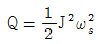
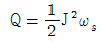
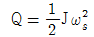
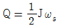
(정답률: 81%)
12. 고온도에 의한 환원으로 얻어진 조금속 또는 정제금속을 주입한 것을 양극으로 하고 목적 금속과 동일한 금속염을 함유한 수용액을 전해액으로서 전해하여 순도가 높은 금을 얻는 방법은?
- 전해정제
- 전해채취
- 전기도금
- 전해연마
(정답률: 67%)
13. 기동 토크가 가장 큰 단상 유도전동기는?
- 콘덴서 기동 전동기
- 콘덴서 전동기
- 분상 기동 전동기
- 반발 전동기
(정답률: 79%)
14. 다음의 소자 중 쌍방향성 다이리스터가 아닌 것은?
- DIAC
- TRIAC
- SSS
- SCR
(정답률: 69%)
15. 자동제어에서 검출장치로 소형 직류발전기를 사용하였다. 이것은 다음 중 무엇을 검출하는 것인가?
- 속도
- 온도
- 위치
- 유량
(정답률: 76%)
16. 500W의 전열기를 정격상태에서 1시간 사용 할 때 발생하는 열량은 약 몇 kcal 인가?
- 430
- 520
- 610
- 860
(정답률: 70%)
17. 전동기에 진동이 생기는 원인에 해당 되지 않는 것은?
- 회전자의 정적 및 동적 불평형
- 베어링의 불평등
- 회전자 철심의 자기적 성질의 불균형
- 고조파 자계에 의한 동력의 평형
(정답률: 68%)
18. 광원의 연색성이 좋은 순서부터 바르게 배열한 것은?
- 크세논등, 백색형광등, 형광수은등, 나트륨등
- 백색형광등, 형광수은등, 나트륨등, 크세논등
- 형광수은등, 나트륨등, 크세논등, 백색형광등
- 나트륨등, 크세논등, 백색형광등, 형광수은등
(정답률: 68%)
19. 다음 중 온도차를 전압값으로 변환시키는 것은?
- 열전대
- 벨로우즈
- 전자석
- 광전 다이오드
(정답률: 83%)
20. 방직·염색의 건조에 가장 적합한 가열방식은?
- 적외선가열
- 저항가열
- 고주파유전가열
- 고주파 유도가열
(정답률: 63%)
2과목: 전력공학
21. 모선의 보호계전방식에 해당되는 것은?
- 전력 평형 보호 방식
- 전압 차동 보호 방식
- 표시선 계전 방식
- 위산 비교 반송 방식
(정답률: 35%)
22. 송전선로에서 역섬락이 생기기 쉬운 때는?
- 선로 손실이 클 때
- 코로나 현상이 발생 할 때
- 선로 정수가 균일하지 않을 때
- 철답각부의 접지저항이 클 때
(정답률: 35%)
23. 전력 계통에서 전력용 콘덴서와 직렬로 연결하는 리액터로 제거되는 고조파는?
- 제5고조파
- 제4고조파
- 제3고조파
- 제2고조파
(정답률: 41%)
24. 복수기에 냉각수를 보내는 펌프는?
- 순환 펌프
- 급수 펌프
- 배출 펌프
- 복수 펌프
(정답률: 12%)
25. 송전선의 4단자 정수가 A = D = 0.92, B = j80Ω일 때 C의 값은 몇 ℧인가?
- j1.92x10-4
- j2.47x10-4
- j1.92x10-3
- j2.47x10-3
(정답률: 20%)
26. 수력 발전소에서 조압 수조를 설치하는 목적은?
- 부유물의 제거
- 수격 작용의 완화
- 유량의 조절
- 토사의 제거
(정답률: 28%)
27. 절연내력을 시험하기 위해 시험용 변압기를 사용하였다. 이 때 전압 조정을 하기 위하여 일반적으로 가장 많이 사용되는 것은?
- 한류 리액터
- 유도전압조정기
- 소형 발전기의 변속 장치
- 다단식 저항 전압 조정기
(정답률: 30%)
28. 일반적인 경우 그 값이 1 이상인 것은?
- 수용률
- 전압 강하율
- 부하율
- 부등률
(정답률: 44%)
29. 기력 발전소에서 탈기기의 설치 목적으로 가장 타당한 것은?
- 급수 중의 용존 산소 및 이산화탄소의 분리
- 급수의 습증기 건조
- 물때의 부착 방지
- 염류 및 부유물질 제거
(정답률: 30%)
30. 가공 송전선로를 가선 할 때에는 하중 조건과 온도조건 등을 고려하여 적당한 이도를 주도록 하여야 한다. 다음 중 이도에 대한 설명으로 옳은 것은?
- 이도가 작으면 전선이 좌우로 크게 흔들려서 다른 상의 전선에 접촉하여 위험하게 된다.
- 전선을 가선할 때 전선을 팽팽하게 가선하는 것을 이도를 크게 준다고 한다.
- 이도를 작게 하면 이에 비례하여 전선의 장력이 증가되며, 심할 때는 전선 상호간이 꼬이게 된다.
- 이소의 대소는 지지물의 높이를 좌우한다.
(정답률: 21%)
31. 재폐로 차단기에 대한 설명으로 옳은 것은?
- 배전선로용은 고장 구간을 고속 차단하여 제거한 후 다시 수동 조작에 의해 배전이 되도록 설계된 것이다.
- 재폐로 계전기와 함께 설치하여 계전기가 고장을 검출하여 이를 차단기에 통보, 차단하도록 된 것이다.
- 3상 재폐로 차단기는 1상의 차단이 가능하고 무전압 시간을 약 20~30초로 정하여 재폐로 하도록 되어 있다.
- 송전선로의 고장 구간을 고속 차단하고 재송전하는 조작을 자동적으로 시행하는 재폐로 차단 장치를 장비한 자동차단기이다.
(정답률: 36%)
32. 현수애자 4개를 1련으로 한 66kV 송전선로가 있다. 현수 애자 1개의 절연 저항이 1,500MΩ 이라면 표준 경간을 200m로 할 때 1Km 당의 누설 컨덕턴스는 몇 ℧인가?
- 0.83x10-9
- 1.66x10-9
- 0.83x10-6
- 1.66x10-6
(정답률: 21%)
33. 정전 용량 C[F]의 콘덴서를 △결선해서 3상 전압V[V]를 가했을 때의 충전용량과 같은 전원을 Y결선으로 했을 때의 충전 용량의 비 (△결선/Y결선)는?
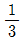
- 3
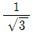
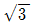
(정답률: 29%)
34. 중성점 접지 방식에서 직접 접지 방식을 다른 접지방식과 비교하였을 때 그 설명이 틀린 것은?
- 보호 계전기의 동작이 확실하여 신뢰도가 높다.
- 변압기의 저감 절연이 가능하다.
- 다중접지사고의 진전성이 대단히 크다.
- 단선 고장시의 이상전압이 최저이다.
(정답률: 31%)
35. 전력선과 통신선과의 상호 인덕턴스에 의하여 발생되는 유도 장해는?
- 정전유도장해
- 전자유도장해
- 고조파유도장해
- 전력유도장해
(정답률: 37%)
36. 교류 저압 배전방식에서 밸런서를 필요로 하는 방식은?
- 단상 2선식
- 단상 3선식
- 3상 3선식
- 3상 4선식
(정답률: 28%)
37. 송전단 전압 161kV, 수전단 전압 155kV, 상차각 60도, 리액턴스가 50Ω일 때 선로 손실을 무시하면 송전전력은 약 몇 [MW]인가?
- 300
- 321
- 432
- 580
(정답률: 25%)
38. 과전류 계전기(OCR)의 탭 값을 옳게 설명한 것은?
- 계전기의 최소 동작 전류
- 계전기의 최대 부하 전류
- 계전기의 동작시한
- 변류기의 권수비
(정답률: 42%)
39. 정격 전압 1차 6600V, 2차 220V의 단상 변압기 2대를 승압기로 V결선하여 6300V의 3상 전원에 접속하면 승압된 전압은 약 몇 V 인가?(문제 오류로 2, 3번 보기가 같습니다. 정확한 내용을 아시는분 께서는 오류신고를 통하여 내용 작성 부탁 드립니다. 정답은 3번입니다.)
- 6,410
- 6,510
- 6,510
- 6,560
(정답률: 33%)
40. 차단기와 차단기의 소호매질이 틀리게 연결된 것은?
- 공기 차단기 - 압축공기
- 가스 차단기 - SF6가스
- 자기 차단기 - 진공
- 유입 차단기 - 절연유
(정답률: 39%)
3과목: 전기기기
41. 3상 동기 발전기에서 매극 매상의 슬롯 수가 3이면 기본파에 대한 분포권 계수는 어떻게 되는가?
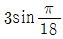
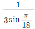
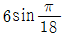
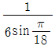
(정답률: 28%)
42. 단자 전압 100V, 전기자 전류 10A, 전기자 회로의 저항 1Ω, 정격 속도 1,800rpm으로 전부하에서 운전하고 있는 직류 분권 전동기의 토크는 약 몇 [N·m]인가?
- 2.8
- 3.0
- 4.0
- 4.8
(정답률: 29%)
43. 변압기의 전부하 효율은?
- 출력/입력+동손+철손
- 입력/출력+동손+철손
- 출력/출력+동손+철손
- 입력/입력+동손+철손
(정답률: 13%)
44. 보호하려는 회의 전압이 그 예정값 이상으로 되었을 때 동작하는 것으로 기기 설비의 보호에 사용되는 계전기는?
- 거리 계전기
- 방향 계전기
- 과전압 계전기
- 지락 과전압 계전기
(정답률: 34%)
45. E를 교류 전압 V의 실효값이라고 할 때 단상 전파정류에서 얻을 수 있는 직류 전압 ed의 평균값은 약 얼마인가?
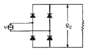
- 2E
- 1.5E
- 0.9E
- 0.5E
(정답률: 34%)
46. 토크 모터란?
- 특별히 큰 전부하를 토크를 발생하는 전동기
- 시동 토크가 특히 큰 전동기
- 정동 토크가 특히 큰 전동기
- 중성 위치에서 어는 각도 만큼 회전하는 전동기
(정답률: 26%)
47. 소형 유도 전동기의 슬롯이나 권선의 잘못된 제작으로 전동기를 기동할 때 발생되는 현상은?
- 토크 증가 현상
- 게르게스 현상
- 크로우링 현상
- 제동 토크의 증가 현상
(정답률: 32%)
48. 변압기의 정격 전류에 대한 백분율 저항 강하가1.5%, 백분율 리액턴스 강하는 4%이다. 이 변압기에 정격 전류를 통하여 전압 변동률이 최대로 되는 부하 역률은 약 얼마인가?
- 0.15
- 0.28
- 0.35
- 0.68
(정답률: 28%)
49. 3상 유도 전동기의 전원측에서 임의의 2선을 바꾸어 접속하여 운전하면?
- 회전 방향이 반대가 된다.
- 회전 방량이 불변이나 속도가 약간 떨어진다.
- 즉각 정지된다.
- 바꾸지 않았을 때와 동일하다.
(정답률: 27%)
50. 변압기의 냉각 방식 중 유입 자냉식의 표시 기호는?
- ANAN
- ONAN
- ONAF
- OFAF
(정답률: 26%)
51. 25kW, 125V, 1,200rpm의 직류 타여자 발전기의 전기자 저항(브러시 저항 포함)은 0.4Ω이다. 이 발전기를 정격 상태에서 운전하고 있을 때 속도를 200rpm으로 저하시켰다면 발전기의 유기 기전력은 어떻게 변하하겠는가? (단, 정상 상태에서의 유기 기전력은 E라 한다.)
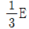
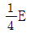
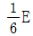
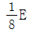
(정답률: 30%)
52. 정격 속도로 회전하고 있는 무부하의 분권 발전기가 있다. 계자권선이 저항이 50Ω, 계자 전류 2A, 전기자 저항이 1.5Ω 일 때 유기 기전력은 몇 [V]인가?
- 97
- 100
- 1.3
- 106
(정답률: 20%)
53. 직류 전동기의 속도 제어 방법에 속하지 않는 것은?
- 저항 제어법
- 전압 제어법
- 계자 제어법
- 2차 여자법
(정답률: 28%)
54. 다이리스터의 게이트 신호 제어는 무엇을 변화시키는 것인가?
- 전압
- 전류
- 주파수
- 위상각
(정답률: 30%)
55. 동기 발전기의 병렬 운전에 필요한 조건이 아닌 것은?
- 기전력의 크기가 같을 것
- 위상이 같을 것
- 주파수가 같을 것
- 용량이 같을 것
(정답률: 31%)
56. 다음의 정류 회로 중 가장 큰 출력값을 갖는 회로는?
- 단상 반파 정류 회로
- 3상 반파 정류 회로
- 단산 전파 정류 회로
- 3상 전파 정류 회로
(정답률: 24%)
57. 동기 발전기의 단자 부근에서 단락이 일어났다고 할 때 단락 전류에 대한 설명으로 옳은 것은?
- 서서히 증가한다.
- 처음은 크나 첨차로 감소한다.
- 처음부터 일정한 큰 전류가 흐른다.
- 발전기는 즉시 정지한다.
(정답률: 40%)
58. 유도 전동기의 동기 와트를 설명한 것은?
- 동기 속도 하에서의 2차 입력을 말함
- 동기 속도 하에서의 1차 입력을 말함
- 동기 속도 하에서의 2차 출력을 말함
- 동기 속도 하에서의 2차 동손을 말함
(정답률: 20%)
59. 유도 발전기의 슬립 s의 범위에서 속하는 것은?
- 0 ＜ s ＜ 1
- s = 0
- s = 1
- -1 ＜ s ＜ 0
(정답률: 16%)
60. 변압기의 누설 리액턴스를 줄이는 가장 효과적인 방법은?
- 권선을 분할하여 조립한다.
- 권선을 동심 배치한다.
- 코일의 단면적을 크게한다.
- 철심의 단면적을 크게한다.
(정답률: 13%)
4과목: 회로이론
61. 단상 전력계 2개로 평형 3상 부하의 전력을 측정하였더니 각각 300W와 600W를 나타내었다. 부하 역률은 얼마인가? (단, 전압과 전류는 정현파이다.)
- 0.5
- 0.577
- 0.637
- 0.866
(정답률: 32%)
62. 그림과 같은 회로에서 단자 a,b 사이의 전압은 몇 V인가?
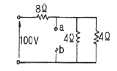
- 20
- 40
- 60
- 80
(정답률: 23%)
63. 대칭 다상 교류에 의한 회전 자계 중 설명이 잘못된 것은?
- 대칭 3상 교류에 의한 회전 자계는 원형 회전자계이다.
- 대칭 2상 교류에 의한 회전 자계는 타원형 회전자계이다.
- 3상 교류에서 어는 두 코일의 전류의 상순을 바꾸면 회전 자계의 방향도 바꾸어 진다.
- 회전자계의 회전 속도는 일정한 각속도이다.
(정답률: 30%)
64. 비정현파의 성분을 표시한 것이다. 일반적인 표현으로 가장 바르게 나타낸 것은?
- 직류분 + 고조파
- 교류분 + 고조파
- 기본파 + 고조파 + 직류분
- 교류분 + 고조파 + 기본파
(정답률: 27%)
65. 그림과 같은 회로의 전달 함수는?
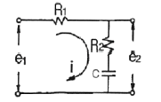
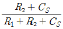
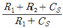
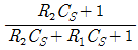
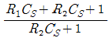
(정답률: 34%)
66. 그림과 같은 4단자망의 영상 전달 정수 θ는?
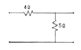
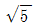
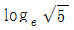
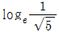
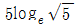
(정답률: 17%)
67.
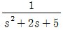
의 라플라스 변환은?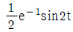
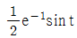
- e-2tcos2t
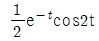
(정답률: 29%)
68. Z = 8 + j6Ω인 평형 Y부하에 선간 전압이 200V인 대칭 3상 전압을 가할 대 선전류는 약 몇 [A]인가?
- 0.08
- 11.5
- 17.8
- 19.5
(정답률: 35%)
69. RΩ의 저항 3개를 Y로 접속하고 이것을 200V의 평형 3상 교류 전원에 연결할 때 선전류가 20A 흘렀다. 이 3개의 저항을 △로 접속하고 동일전원에 연결하였을 때의 선전류는 몇 [A]인가?
- 30
- 40
- 50
- 60
(정답률: 33%)
70. 회로에서 t=0인 순간에 전압 E을 인가한 경우, 인덕턴스 L에 걸리는 전압은?
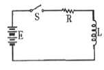
- 0
- E
- LE/R
- E/R
(정답률: 35%)
71. 대칭 3상 전압이 a상 Va[V], b상 Vb=a2Va[V], c상 Vc=aVa[V] a상을 기준으로 한 대칭분 전압 중 정상분 V1은 어떻게표시되는가?
- 0
- Va
- aVa
- a2Va
(정답률: 27%)
72. 그림과 같은 회로에서 V1=110[V], V2=120[V], R1=1[Ω], R2=2[Ω]일 때, a,b 단자에 5Ω의 R3를 접속하였을 때 a,b간의 전압 Vab는 몇 [V]인가?
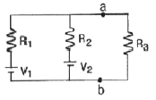
- 85
- 90
- 100
- 1⑤
(정답률: 21%)
73. 어떤 회로의 전압 및 전류가 V=10∠60°, I=5∠30°일 때 이 회로의 임피던스 ZΩ값은?
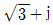
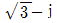
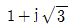
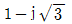
(정답률: 23%)
74. 4단자 회로에서 4단자 정수를 A,B,C,D 라하면 영상임피던스 Z01,Z02는?
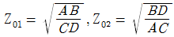
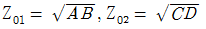
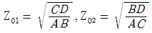
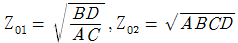
(정답률: 16%)
75. 어느 회로에 전압과 전류의 실효값이 각각 50V, 10A이고 역률이 0.8 이다. 무효 전력은 몇 [Var]인가?
- 300
- 400
- 500
- 600
(정답률: 21%)
76. 그림과 같은 회로는?
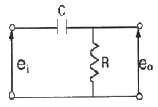
- 가산 회로
- 승산 회로
- 미분 회로
- 적분 회로
(정답률: 9%)
77. 어떤 부하에
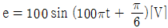
의 기전력을 가하니 전류가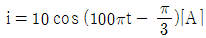
이었다. 이 부하의 소비 전력은 몇 [W]인가?- 250
- 433
- 500
- 866
(정답률: 20%)
78. 직류 R-C 직렬 회로에서 회로의 시정수 값은?
- R/C
- C/R
- RC
- 1/RC
(정답률: 20%)
79.
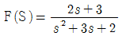
의 라플라스 함수를 시간 함수로 고치면 어떻게 되는가?- F(t)=e-1-2e-2t
- F(t)=e-1+te-2t
- F(t)=e-1+e-2t
- F(t)=2t+e-t
(정답률: 17%)
80. 그림과 같은 회로기 정저항 회로기 되기 위한 L은 몇 [Ⅱ]인가?
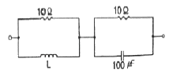
- 0.01
- 0.1
- 2
- 10
(정답률: 28%)
5과목: 전기설비
81. 옥내에 시설하는 전동기가 과전류로 소손될 우려가 있을 경우 자동적으로 이를 저지하거나 경보하는 장치를 하여야 한다. 정격출력이 몇 [kW] 이하인 전동기에는 이와 같은 과부하 보호장치를 시설하지 않아도 되는가?
- 0.2
- 0.75
- 3
- 5
(정답률: 9%)
82. 동일 지지물에 고·저압을 병가할 때 저압 가공전선은 어느 위치에 시설하여야 되는가?
- 고압 가공전선의 상부에 시설
- 동일 완금에 고압 가공 전선과 평행되게 시설
- 고압 가공전선의 하부에 시설
- 고압 가공전선의 측면으로 평행되게 시설
(정답률: 40%)
83. 시가지의 도로상에 시설하는 가공 직류 전차선로에는 특별한 경우가 아닌 경우 그 선로 길이가 몇 km 이하마다 개폐기를 시설해야 하는가?
- 1.5
- 2
- 2.5
- 4
(정답률: 32%)
84. 특별 고압의 기준으로 옳은 것은?
- 3,000V를 넘는 것
- 5,000V를 넘는 것
- 7,000V를 넘는 것
- 10,000V를 넘는 것
(정답률: 42%)
85. 지중 또는 수중에 시설되어 있는 금속체의 부식을 방지하기 위한 전기방식회로의 사용전압은 직류 몇 [V]이하이어야 하는가?
- 30
- 60
- 90
- 120
(정답률: 30%)
86. 가로등, 경기장, 공장, 아파트 단지 등의 일반 조명을 위하여 시설하는 고압 방전등은 그 효율이 몇 [lm/W]이상의 것이어야 하는가?
- 30
- 50
- 70
- 100
(정답률: 35%)
87. 사용 전압 22,900[V]의 가공 전선이 철도를 횡단하는 경우 전선의 궤조면상 높이는 몇 m 이상 이어야 하는가?
- 5
- 5.5
- 6
- 6.5
(정답률: 31%)
88. 발전소의 주요 변압기에 반드시 시설하여야 할 계측 장치로 옳은 것은?
- 전입 및 전류 또는 전력량
- 전입, 유온 및 주파수
- 전압 및 전류 또는 전력
- 전압, 전류 및 수요 전력량
(정답률: 25%)
89. 풀용 수중 조명등에 전기를 공급하는 절연 변압기의 시설에 관한 사항 중 틀린 것은?
- 절연 변압기의 2차측 전로는 접지하지 않는다.
- 2차측 전로의 사용전압이 30V 이하인 경우에는 1차와 2차 권선 사이에 금속제의 방지판을 설치한다.
- 1차와 2차 권선사이에 설치하는 금속제의 혼촉방지판은 제1종 접지공사를 한다.
- 2차측 전로의 전압이 150V 이하인 경우에만 혼촉방지판을 설치한다.
(정답률: 17%)
90. 22.9kV 중성선 다중접지 계통에서 각 접지선을 중성선으로부터 분리하였을 경우의 1km 마다의 중성선과 대지사이의 합성 전기저항값은 몇 Ω이하이어야 하는가? (단, 전로에 지기가 생겼을 때에 2초 이내에 자동적으로 전로로부터 차단하는 장치가 되어 있다고 한다.)
- 15
- 50
- 100
- 150
(정답률: 30%)
91. 특별 고압 가공전선로를 시가지에 시설하는 경우, 지지물로 사용할 수 없는 것은?
- 목주
- 철탑
- 철근콘크리트주
- 철주
(정답률: 31%)
92. '관등 회로'에 대한 설명으로 옳은 것은?
- 분기점으로부터의 안정기까지의 전로를 말한다.
- 스위치로부터 방전등까지의 전로를 말한다.
- 스위치로부터 안정기까지의 전로를 말한다.
- 방전등용 안정기로부터 방전과까지의 전로를 말한다.
(정답률: 37%)
93. 정격 전류가 15A를 넘고 20A이하인 배성용 차단기로 보호되는 저압 옥내전로의 콘센트는 정격 전류가 몇 A 이하인 것을 사용하여야 하는가?
- 15
- 20
- 30
- 50
(정답률: 32%)
94. '지지물'의 정의에 대한 설명으로 가장 적당한 것은?
- 지중전선로를 보호하는 설비를 말한다.
- 전주 및 철탑과 이와 유사한 시설물로서 전선류를 지지하는 것을 주목적으로 하는 것을 말한다.
- 목주나 철근으로 전주를지지 보호하는 것을 주목적으로 하는 설비를 말한다.
- 지중에 시설하는 수관 및 가스관 그리고 매설지선을 보호하는 것을 주목적으로 하는 것을 말한다.
(정답률: 23%)
95. 3상 220V 유도 전동기의 권선과 대지간의 절연내력 시험 전압과 견디어야 할 최소 시간이 맞는 것은?
- 220V, 5분
- 275V, 10분
- 330V, 20분
- 500V, 10분
(정답률: 32%)
96. 라이팅덕트공사에 의한 전압 옥내배선에서 덕트의 지지점간의 거리는 몇m이하로 하여야 하는가?
- 2
- 3
- 4
- 5
(정답률: 27%)
97. 고압 가공전선로의 전선으로 단면적 14mm2의 경동연선을 사용할 때 그 지지물이 B종 철주인 경우라면, 경간은 몇 m이어야 하는가?
- 150
- 200
- 250
- 300
(정답률: 35%)
98. 가공전선로의 지지물에 시설하는 지선의 시설 기준에 대한 설명 중 옳은 것은?
- 지선의 안전율은 3.0 이상이어야 한다.
- 연선을 사용할 경우에는 소선 3가닥 이상이어야 한다.
- 지중의 부분 및 지표상 20cm 까지의 부분에는 내식성이 있는 것 또는 아연 도금을 한다.
- 도로를 횡단하여 시설하는 지선의 높이는 지표상 4m 이상으로 하여야 한다.
(정답률: 30%)
99. 지중 전선로를 직접 매설식에 의하여 차량 기타 중량물의 압력을 받을 우려가 있는 장소에 시설하는 경우 그 깊이는 몇m 이상이어야 하는가?(2021년 변경된 KEC 규정 적용됨)
- 0.6
- 1.0
- 1.2
- 1.5
(정답률: 39%)
100. 400V 이상의 저압용 기계기구의 철대 및 금속제 외함에는 제 몇 종 접지공사를 하여야 하는가?
- 제1종
- 제2종
- 제3종
- 특별 제3종
(정답률: 32%)
입력 에너지 = 1kW × 30분 = 0.5kWh
열에너지 출력량 = 4L × 1kg/L × 4.18J/g/℃ × (80℃ - 15℃) = 16.72MJ
전열기의 효율 = (열에너지 출력량 ÷ 입력 에너지) × 100% = (16.72MJ ÷ 0.5kWh) × 100% ≈ 60%
따라서, 정답은 "60"이다.